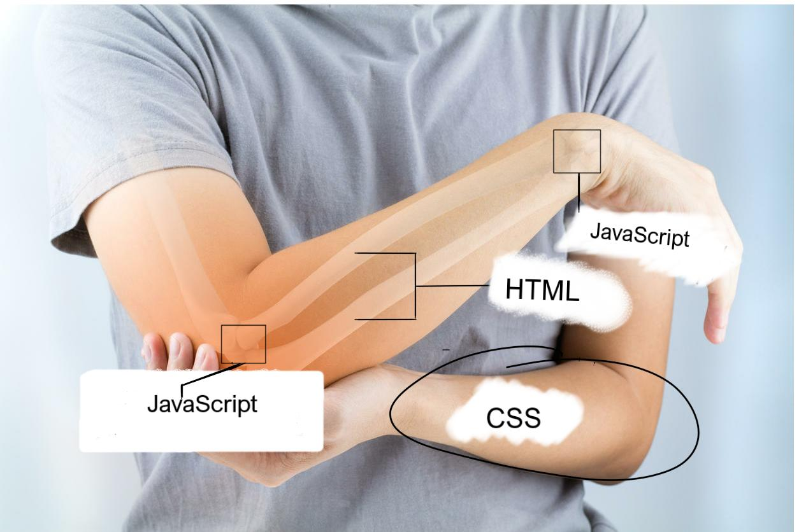

Compostion d'un site
Un site Web se comporte exactement comme un gros dossier sur n'importe quel ordinateur, qui, lorsqu'on l'ouvre, va agir comme expliqué dans la partie notions fondamentales pour s'afficher dans le navigateur, car contrairement à un banal dossier, le site est stocké sur le Web et non sur le bureau ou dans un document.
Ce "dossier sur le web" contient, comme n'importe quel autre dossier, nombre de fichiers, rangées en 3 catégories principales, soit :
- Les fichiers HTML, qui créent le contenu, qui créent les éléments.
L'HTMl est le squelette du site, sa colonne vertebrale, sa couche interne.
- Le(s) fichier(s) CSS , (Cascading Style Sheets) qui stylise et structure les éléments.
Le CSS est sa peau, sa couche externe, ce qui le rend beau.
- Le(s) fichier(s) JavaScript, qui modifient et créent l'interraction à travers le contenu.
Le Javascript représente les muscles du sites, ses tendons, il modifie le contenu et le fait evoluer.

Représentation des trois langages de programmations majeurs [26]